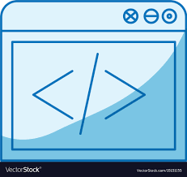
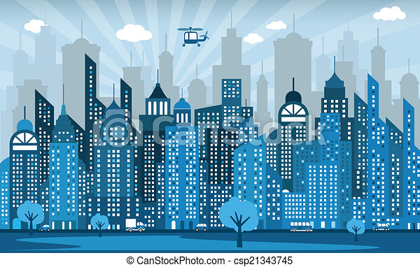

Iam a web designer and, I also develop it and I like it soo much.
Since I was a child I loved things to do with computer and technologies more so platforms used to convey informations
and messages. I was obsessed with facebook,whatsap and google then as the time goes I decided to venture on what is
going on at the background and to know the origin of it. That's how I decided to do web design and developement to helpthose
who want to convey there information through various Internet come through.

From a very young age I liked to draw, cut out, make collages and tell stories. I never had my feet on the ground. I tore up a lot of magazines and painted books that I shouldn't have. Mom said she was going to work in advertising. He was somewhat right...
I studied Computer science and specialized in programming(web design and front-end development and I realise I can combine everything I like; Coding, comics, drawing, games and storytelling, all in one. I am still in Laikipia University taking course in computer science.
In all my works I put something of myself, something I saw, something I read, heard or played. I build visual stories that cross space and conquer the confines of the universe, reaching chromatic galaxies and typographic planets.



